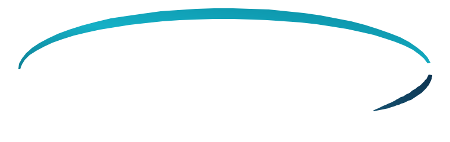

Pharmaceutical Solutions

PharmeazorBetter Health. Brighter Tomorrow.
Innovative pharmaceutical solutions
for a healthier, happier life.
Quality
You Can Trust
You Can Trust
Innovation
For a Better Life
For a Better Life
Your Health
Our Priority
Our Priority
